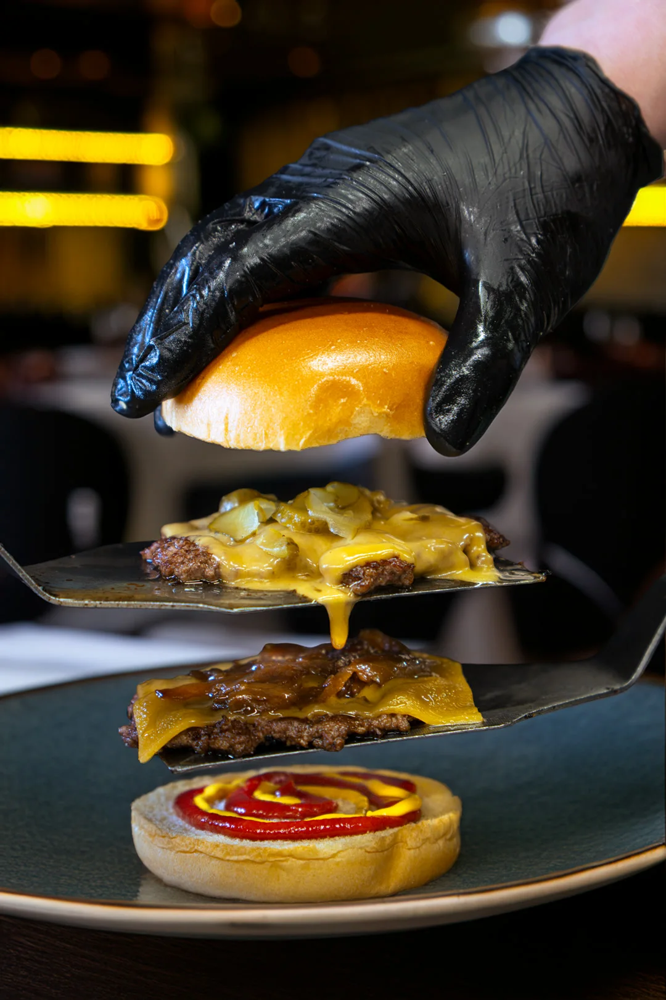
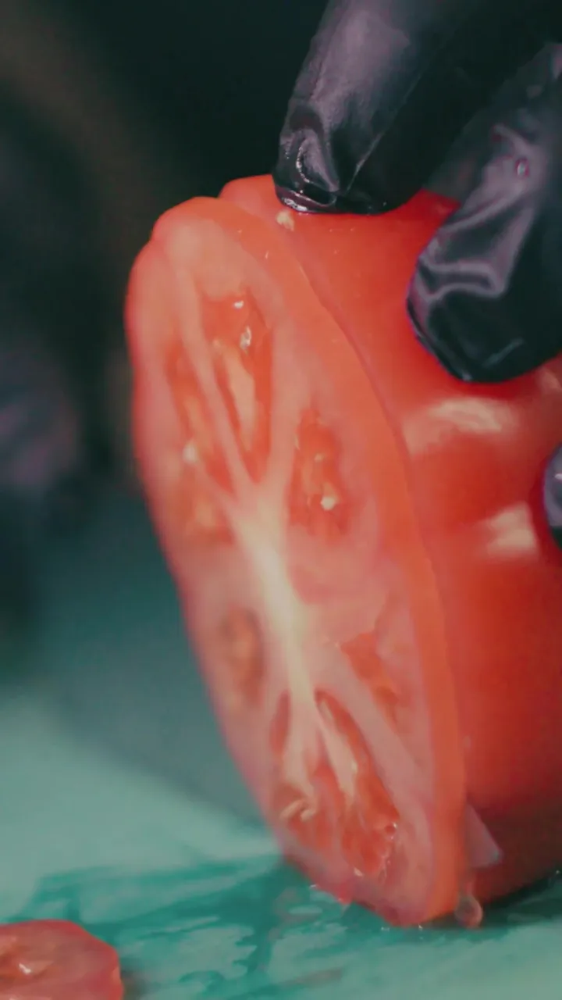
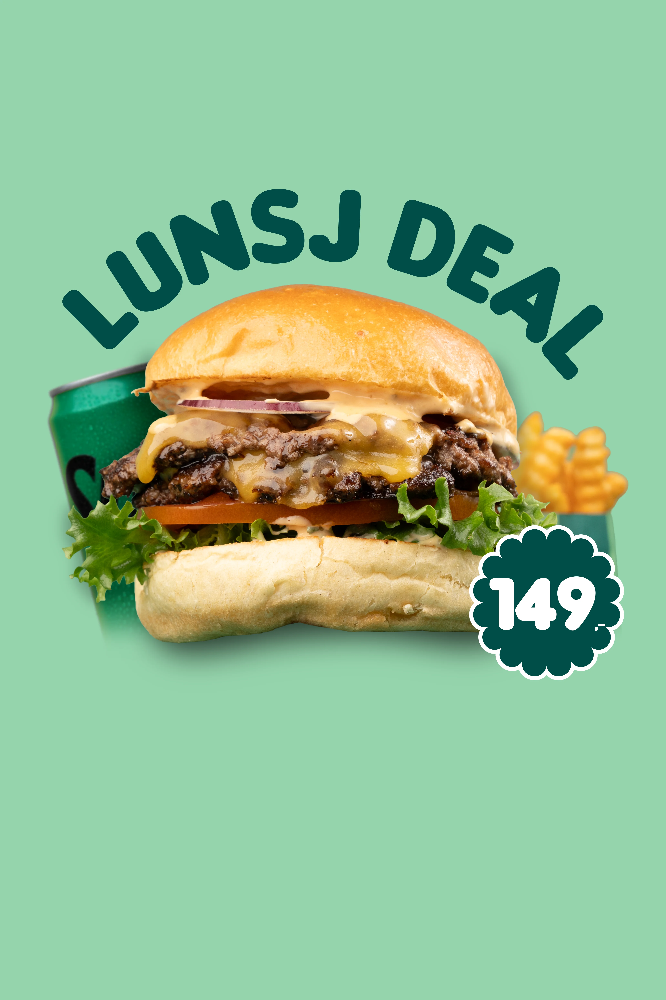
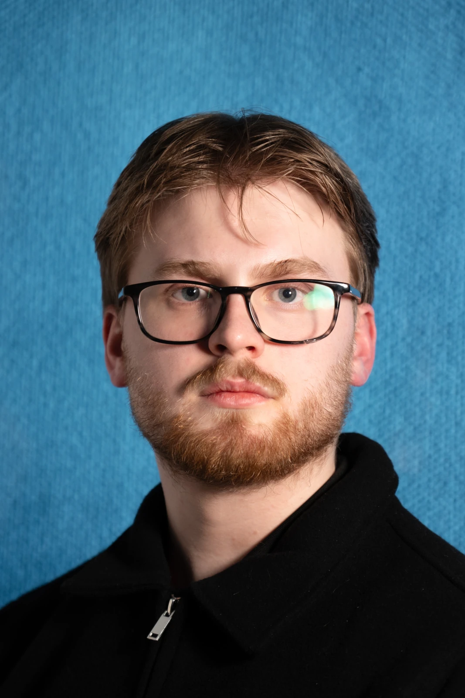
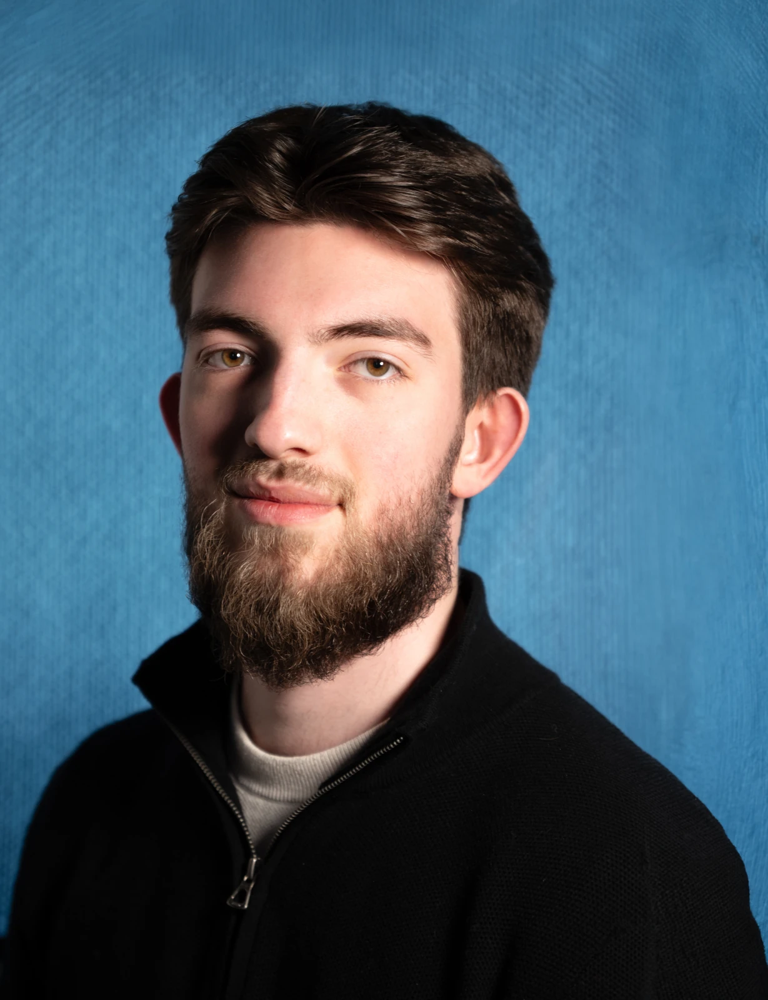
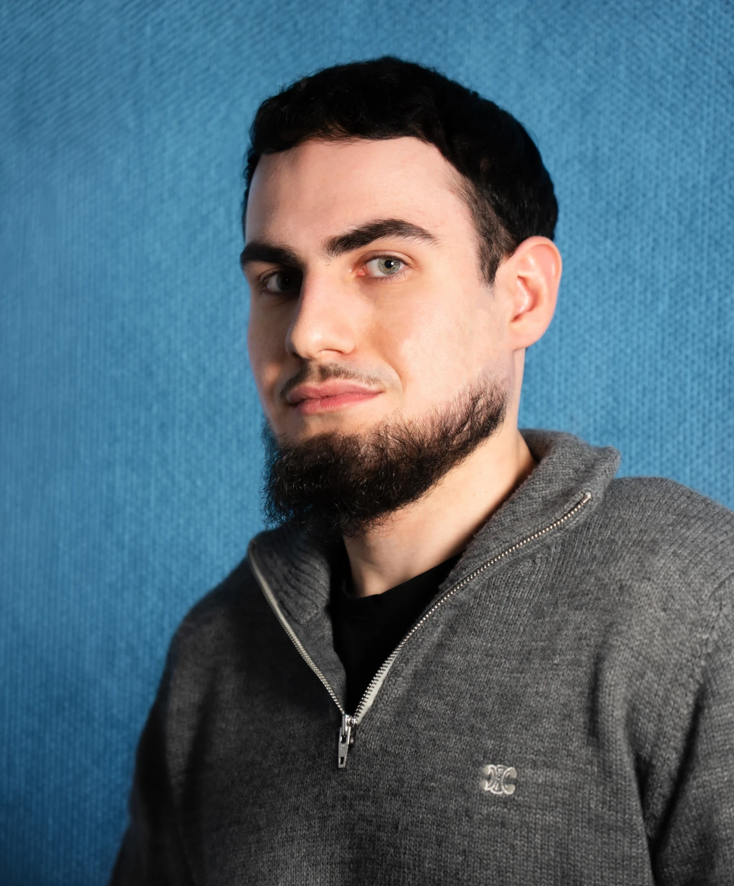

Three ways to
make one house.
Private visual exploration · 6 September 2026
Three different systems for the same independent creative house. The same real campaign media anchors each comparison. These are design compositions, not three finished websites.
Common Ground
Independent media share an edge. Their proportions change; their relationship stays intact.
Three specialists.
One creative house.
Image, film and technology.
Independent practices. A shared creative conversation.
Oslo, Norway


This website.
A composition study.
Practice labels indicate capabilities. Existing campaign credit: Syntax Studio.
Selected work
Made to
look good.
Food photography and moving image, composed into one campaign.
Burger campaign
Original credit: Syntax Studio

The Edit
Meaning appears between frames. A quiet editorial voice gives way to an authored sequence of images.
Independent creative house.
Oslo, Norway.
A still.
A cut.
A different way in.
Selected sequence / Syntax StudioIn the kitchen.
Frame study from existing campaign media.
Original credit: Syntax Studio.
Different ways of seeing.
One conversation.
ISO400Image & Design
35mmFilm & VFX
NyfaneTechnology
Open House Selected direction
An invitation into the studio. Three places to work, connected by the people and ideas passing between them.
Different rooms.
Open doors.
Three specialist practices, with room for ideas to move between them.
An independent creative house.
Oslo, Norway.
ISO400
Image & Design
35mm
Film & VFX
Nyfane
Technology
The people
make the house.
A conversation with the people who make the work. The right specialists, involved from the start.


